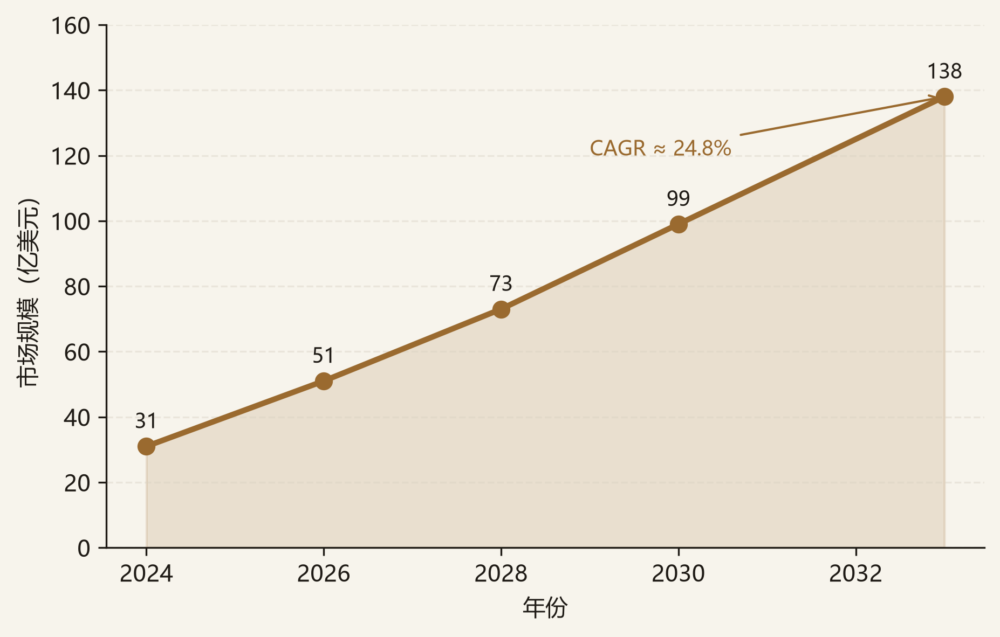
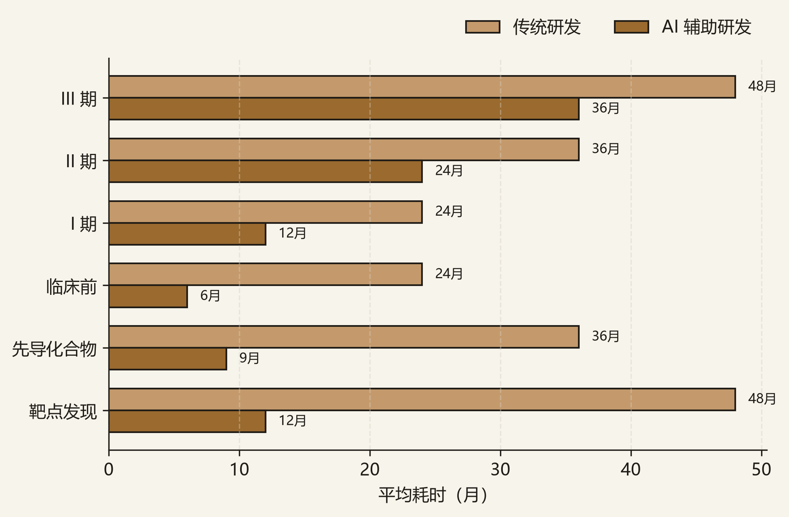
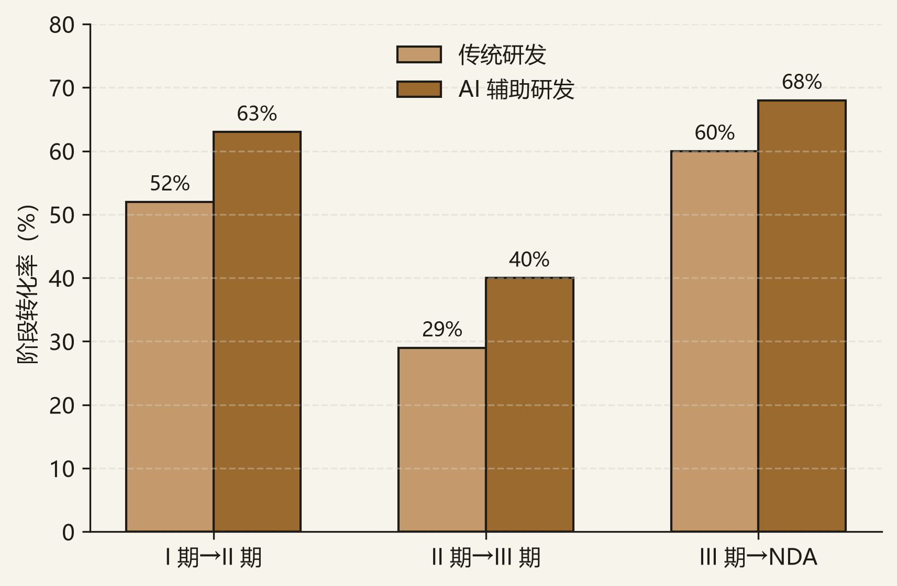

传统创新药受“双十定律”桎梏（10 年、20 亿美元、成功率不足 10%），研发回报率从 2010 年 10.1% 降至 2024 年 5.9%。AI 正以“提升效率 + 提升临床成功率”双重逻辑重构研发范式，2026 年被业界视为越过概念验证、临床数据读出最密集的拐点年。核心投资逻辑：不投纯算法工具与无临床验证的概念，而投具备干湿闭环实验室 + 私域数据飞轮 + 至少 1–2 条临床管线的平台型 TechBio；壁垒正从“算法”转向“数据资产”。
本备忘录所讨论的“AI 制药（TechBio）”指用 AI 重构靶点发现、分子生成、制剂递送、临床设计的创新药研发。覆盖范围包括：
边界：区别于医疗大模型与 C 端问诊产品，本备忘录聚焦「药物研发范式」这一 To B / To 药企的高壁垒赛道。
据弗若斯特沙利文，全球 AI 制药市场规模 2024 年约 31 亿美元，预计 2033 年达 138 亿美元，2024–2033 年复合增速约 24.8%。增长由“效率提升 + 成功率改善”双引擎驱动，且尚未计入 BD 首付款与里程碑的潜在价值释放。

AI 将临床前周期压缩 30–50%、成本降低 40%+。以英矽智能为例，早期发现周期约 12–18 个月，而行业平均约 4.5 年，提速约 3×。这是平台型 TechBio 相较传统 Biotech 最直观的效率优势。

AI 生成分子的 I 期成功率可达 80–90%（传统 40–65%）；BCG 估算 AI 有望将整体临床成功率从 5–10% 提至 9–18%。但须注意：I 期 ≠ 上市，真正分水岭在 II/III 期与获批。

| 环节 | 构成 | 价值判断 |
|---|---|---|
| 数据/算力 | 多组学库、蛋白模型、自动化实验室 | 核心护城河（私域数据闭环） |
| 研发平台 | 靶点/分子/递送/临床预测 | 平台叙事退潮，看临床 + BD 兑现 |
| 管线 | 自研候选药物 | 估值逻辑接近 Biotech，看阶段与权益 |
| 药企/CXO | MNC、CDMO | 买方与合作伙伴，验证需求 |
价值分布结论：数据/算力是核心壁垒，私域数据闭环不可复制；平台叙事退潮后，估值锚从“平台能力”转向“临床读出 + BD 结构”。
本备忘录采用“干湿闭环”框架：以“数据飞轮 × 临床验证”为主轴；纯算法工具（无数据闭环、无管线）不作为拟投标的。
自建湿实验室形成“模型假设 → 实验验证 → 数据反哺”飞轮（如 Recursion），私域数据是不可复制的壁垒。关注点：数据规模与迭代速度、客户是否持续付费、是否至少 1–2 条管线进临床。
小分子（英矽）、AI+机器人（晶泰）、纳米递送（剂泰）已形成差异化；递送是“大分子时代命门”，壁垒高。关注点：技术唯一性、管线阶段、BD 首付款质量。
水木分子（清华，AI 大分子）、亿药（AI 药物重定位）、深势（药/材料/能源平台）处早期，估值低、北京密集，是战投“早布局”窗口。关注点：团队来源、数据资产、与已上市三小龙的差异化。
| 标的 | 主线 | 核心逻辑 | 主要股东/战投 | 利好 | 利空·风险 | 状态 |
|---|---|---|---|---|---|---|
| 剂泰科技 | B | 全球 AI 递送第一股（07666.HK）、NanoForge 千万级脂质库 | 红杉（5 轮）、北京市医药健康基金（大兴投资）D 轮 | 递送是大分子时代命门、壁垒高、北京大兴 | 商业化兑现节奏不确定、上市后仍亏损股价波动 | 首选 |
| 水木分子 | C | 清华系、AI 大分子差异化、估值低 | 清华系、北京国资、早期机构 | 差异化、早期布局窗口 | 极早期、无临床管线验证、与大模型药物发现竞争激烈 | 关注（早期） |
| 亿药科技 | C | AI 药物重定位（老药新用），成本低 | 早期机构、北京背景 | 重定位路径短、北京密集 | 天花板有限、极早期、数据资产待验证 | 关注（早期） |
| 英矽智能 | A | Pharma.AI 平台、10 款进临床冲刺 III 期 | 礼来、腾讯（基石）、淡马锡 | BD 爆发（礼来 27.5 亿美元）、管线最靠前 | 仍亏损、全自主 AI 药尚未获批、股价波动大 | 标杆 |
| 晶泰科技 | B | AI+机器人实验室，2025 盈利 2.58 亿 | 腾讯生态、多家机构 | 商业化标杆、盈利可见 | 盈利质量（依赖 CDMO/服务费）待验证、平台叙事退潮 | 标杆 |
“首选”指当前阶段赔率与确定性相对占优的标的，不构成投资建议。所有估值与财务数据须以最新招股书、Wind 及公司公告为准。
传统研发 10 年 / 20 亿美元 / 成功率不足 10%；AI 将临床前压缩 30–50%、成本降 40%+，早期发现提速约 3×；BCG 估算整体成功率 5–10% → 9–18%（上限近翻倍）。单项目期望回报上升、组合风险下降，平台型 TechBio 的 rNPV 改善。但须注意：提速主要发生在早期，III 期后边际递减。
| 指标 | 传统 | AI 辅助 | 改善 | 测算依据 |
|---|---|---|---|---|
| 早期发现周期 | ~4.5 年 | 12–18 月 | 约 3× | 英矽智能等披露 |
| 整体临床成功率 | 5–10% | 9–18% | 上限近翻倍 | BCG，2024 |
| I 期成功率 | 40–65% | 80–90% | 显著提升 | BCG，2024 |
AI 生成分子 I 期成功率高，但 I 期 ≠ 上市；真正分水岭在 II/III 期与获批，目前全球尚无完全 AI 全流程药物获批。数据科学要跟踪 II/III 期读出，而非被 I 期高成功率迷惑。同时用 BD 结构判断收入质量：首付款（真金白银）vs 里程碑（或有）vs 权益保留（上行）。
本赛道估值高度依赖“临床读出 + BD”叙事，以下倍数为基于公开信息的示意框架，原因有三：其一，多数 AI 制药企业仍亏损、营收小，无稳定盈利锚，DCF 难以直接适用；其二，港股 18C 上市标的市值受临床情绪与 BD 消息驱动，波动大；其三，海外可比（Recursion 等）同样多未盈利，估值含 AI 叙事与流动性溢价，直接对标只能给区间。正式估值须以最新招股书、Wind 及 rNPV/DCF 交叉校准。
| 细分领域 | 代表标的 | 估值方法 | 2026E 倍数 | 海外可比 | 估值判断 |
|---|---|---|---|---|---|
| AI 递送平台 | 剂泰科技 | PS + rNPV（管线） | PS 10–20× | / | 看 BD 与管线兑现，部分倒挂 |
| 平台型 TechBio | 英矽智能 | rNPV（管线组合） | 估值数百亿港元 | Recursion PS 8–12× | 高 PS，待 III 期验证 |
| AI+机器人/CXO | 晶泰科技 | PE + PS | PE 30–50× | / | 盈利可见，相对扎实 |
估值结论：已盈利 CXO（晶泰类）或有 BD 首付款的平台抗跌；纯算法无管线公司天花板低、倒挂最甚。
| 情景 | 概率 | 关键触发 | 估值影响 |
|---|---|---|---|
| Bull | 25% | 2026H2 出现首个 AI 全流程药物 II/III 期阳性、BD 首付款放量 | 板块重估，三小龙领跑 |
| Base | 50% | 部分管线推进、BD 持续但无重大突破 | 分化，真飞轮公司溢价比 |
| Bear | 25% | 临床读出不及预期、无任何 AI 药获批、资本退潮 | 高 PS 平台股回撤，仅盈利 CXO 抗跌 |
| 维度 | 海外代表 | 国产对标 | 关键差距 / 启示 |
|---|---|---|---|
| 平台型 TechBio | Recursion（NASDAQ: RXRX）、Relay、Schrödinger、Isomorphic Labs | 晶泰、英矽、剂泰、水木分子 | 海外已上市且多条临床管线；中国以“递送/晶型/自动化实验”细分切入 |
| BD 主战场 | 与 MNC（Pfizer、BMS、Sanofi）大额 BD | 开始对接 MNC，体量偏小 | 海外 BD 首付款 + 里程碑更大，验证平台价值 |
| 监管口径 | FDA 2024 发布 AI/ML 药物开发草案 | NMPA 2025 AI 医疗器械规则 | 双向规则均处早期，AI 药审评尚无全球统一标准 |
AI 制药是 2026 临床拐点赛道，应投“干湿闭环 + 数据飞轮 + 临床管线”的平台，规避纯算法与无验证概念；港股 18C 提供最优资本路径。递送（剂泰类）因是大分子时代命门、壁垒高，是平台首选。
建议研究优先级与项目跟投策略（一级市场股权投资视角）：
下一步跟踪：头部标的 II/III 期临床读出、BD 首付款到账验证收入质量、港股 18C 新上市与破发情况。
| 数据/观点 | 来源 |
|---|---|
| 全球 AI 制药市场规模 | 弗若斯特沙利文，2024–2033 预测 |
| 研发周期与成功率 | BCG，2024；英矽智能等公司披露 |
| 中国创新药 BD 金额 | 医药魔方、公司公告，2026H1 |
| 海外对标平台 | NASDAQ、Crunchbase、媒体披露 |
| 估值倍数 | Wind、公司招股书、Bloomberg，截至 2026.07 |
本备忘录为学习/研究用途的框架性文件，所有数据均来自公开资料整理，不构成任何投资建议。估值倍数、市场规模为示意口径，正式分析须以实时数据及原始来源核实。